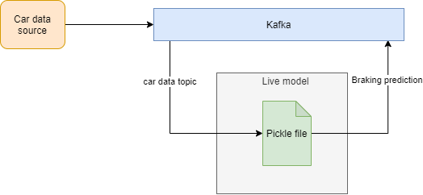
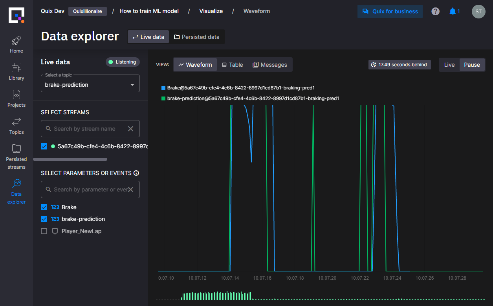

Run ML model in realtime environment
In this article, you will learn how to use pickle file trained on historic data in a realtime environment.
Ensure you have completed the previous stage first, if not find it here.
Why this is important
With the Quix platform, you can run and deploy ML models to the leading edge reacting to data coming from the source with milliseconds latency.
End result
At the end of this article, we will end up with a live model using the pickle file from How to train ML model to process live data on the edge.

Preparation
You’ll need to complete the How to train ML model article to get pickle file with trained model logic.
Run the model
Now let's run the model you created in the previous article. If you have your own model and already know how to run the Python to execute it then these steps might also be useful for you.
Ensure you are logged into the Quix Portal
-
Navigate to the Library
-
Filter the library by selecting Python under languages and Transformation under pipeline stage
-
Select the Data Filtering Model
Tip
If you can't see Data Filtering Model you can also use search to find it
Info
Usually, after clicking on the Data Filtering Model you can look at the code and the readme to ensure it's the correct sample for your needs.
-
Now click Edit code
-
Change the name to "Prediction Model"
-
Ensure the input is "f1-data"
-
Ensure the output is "brake-prediction"
Info
The platform will automatically create any topics that don't already exist
Success
The code from the Library sample is now saved to your workspace.
You can edit and run the code from here or clone it to your computer and work locally.
See more about setting up your local environment here.
Upload the model
Now you need to upload the ML model created in the previous article and edit this code to run the model.
-
Click the upload file icon at the top of the file list
-
Find the file saved in the previous article.
Hint
It's called 'decision_tree_5_depth.sav' and should be in "C:\Users[USER]\" on Windows
Warning
When you click off the file e.g. onto quix_function.py, the editor might prompt you to save the .sav file.
Click "Do not commit"
-
Click quix_function.py in the file list (remember do not commit changes to the model file)
Modify the code
-
Add the following statements to import the required libraries
-
In the
__init__function add the following lines to load the model -
Under the
__init__function add the following new functionThis will pre-process the data, a necessary step before passing it to the model.
## To get the correct output, we preprocess data before we feed them to the trained model def preprocess(self, df): signal_limits = { "Speed": (0, 400), "Steer": (-1, 1), "Gear": (0, 8), "Motion_WorldPositionX": (-math.pi, math.pi), "Brake": (0, 1), } def clamp(n, minn, maxn): return max(min(maxn, n), minn) for signal, limits in signal_limits.items(): df[signal] = df[signal].map(lambda x: clamp(x, limits[0], limits[1])) df["Motion_WorldPositionX_sin"] = df["Motion_WorldPositionX"].map(lambda x: math.sin(x)) df["Motion_WorldPositionX_cos"] = df["Motion_WorldPositionX"].map(lambda x: math.cos(x)) return df -
Delete the
on_pandas_frame_handlerfunction and paste this code in it's place.# Callback triggered for each new parameter data. def on_pandas_frame_handler(self, df: pd.DataFrame): # if no speed column, skip this record if not "Speed" in df.columns: return df output_df = pd.DataFrame() # Preprocessing df = self.preprocess(df) features = ["Motion_WorldPositionX_cos", "Motion_WorldPositionX_sin", "Steer", "Speed", "Gear"] X = df[features] # Lets shift data into the future by 5 seconds. (Note that time column is in nanoseconds). output_df["time"] = df["time"].apply(lambda x: int(x) + int((5 * 1000 * 1000 * 1000))) output_df["brake-prediction"] = self.model.predict(X) print("Prediction") print(output_df["brake-prediction"]) # Merge the original brake value into the output data frame output_df = pd.concat([df[["time", "Brake"]], output_df]).sort_values("time", ascending=True) self.output_stream.parameters.buffer.write(output_df) # Send filtered data to output topic
Update requirements
Click on the requirements.txt file and add sklearn on a new line
Success
You have edited the code to load and run the model.
Run the code
The fastest way to run the code is to click Run in the top right hand corner.
This will install any dependencies into a sandboxed environment and then run the code.
In the output console you will see the result of the prediction.
In the next few steps you will deploy the code and then see a visualization of the output.
Deploy
-
Click Stop if you haven't already done so.
-
To deploy the code, click Deploy.
-
On the dialog that appears click Deploy.
Once the code has been built, deployed it will be started automatically.
Success
Your code is now running in a fully production ready ecosystem.
Visualize whats happening
To see the output of your model in real time you will use the Data explorer.
-
Click the Data explorer button on the left hand menu.
-
If it's not already selected click the Live data tab at the top
-
Ensure the
brake-predicitontopic is selected -
Select a stream (you should only have one)
-
Select
brake-predictionandbrakefrom the parameters list
Success
You should now see a graphical output for the prediction being output by the model as well as the actual brake value

Note
Don't forget this exercise was to deploy an ML model in the Quix platform.
We didn't promise to train a good model. So the prediciton may not always match the actual brake value.